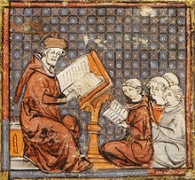

Curso de Historia de la Filosofía
Descripción del Curso
En este curso exploraremos la evolución del pensamiento filosófico desde la antigüedad hasta la era contemporánea, analizando las principales corrientes, figuras y contextos históricos que marcaron cada etapa.
Duración del Curso
Duración total: 150 minutos
Objetivos del Curso
- Comprender cómo ha evolucionado la filosofía a lo largo de la historia.
- Identificar los principales filósofos y sus aportaciones en cada época.
- Reflexionar sobre el impacto del pensamiento filosófico en la sociedad.
Contenido del Curso
- Módulo 1: Filosofía Antigua (30 minutos)
- Módulo 2: Filosofía Medieval (25 minutos)
- Módulo 3: Filosofía Moderna (35 minutos)
- Módulo 4: Filosofía Contemporánea (30 minutos)
- Módulo 5: Aplicaciones Históricas de la Filosofía (30 minutos)
Módulo 1: Filosofía Antigua
Examinaremos el origen del pensamiento filosófico y los principales autores de esta época.
Orígenes
La filosofía nació en la antigua Grecia como una forma de explicar el mundo sin recurrir a mitos. Sus primeros representantes fueron los presocráticos.
Filósofos Destacados
- Sócrates: Centró su filosofía en la ética y el conocimiento.
- Platón: Fundador del idealismo y de la Academia.
- Aristóteles: Abordó todas las ciencias y fundó el pensamiento lógico.
Módulo 2: Filosofía Medieval

Durante la Edad Media, la filosofía se centró en armonizar la fe y la razón.
Temas Clave
- La existencia de Dios.
- Relación entre filosofía y teología.
Filósofos Destacados
- Santo Tomás de Aquino: Integró el pensamiento aristotélico con la doctrina cristiana.
- San Agustín: Reflexionó sobre el tiempo y la naturaleza del alma.
Módulo 3: Filosofía Moderna
Con el Renacimiento y la Ilustración, el pensamiento filosófico se volvió más secular y centrado en el ser humano.
Corrientes Principales
- Racionalismo: Liderado por Descartes, se centra en la razón como fuente principal del conocimiento.
- Empirismo: Defendido por Locke y Hume, subraya la experiencia sensorial.
- Idealismo: Kant revolucionó la filosofía al combinar racionalismo y empirismo.
Módulo 4: Filosofía Contemporánea
En esta etapa, la filosofía aborda los desafíos del mundo moderno y postmoderno.
Movimientos Filosóficos
- Existencialismo: Reflexiona sobre la libertad y la existencia humana (Sartre, Camus).
- Postestructuralismo: Desafía las estructuras del pensamiento (Foucault, Derrida).
- Filosofía Analítica: Analiza el lenguaje y la lógica (Russell, Wittgenstein).
Módulo 5: Aplicaciones Históricas de la Filosofía
Analizaremos cómo la filosofía ha influido en los grandes eventos históricos:
- Revolución Científica: Impulsada por el racionalismo y el empirismo.
- Revoluciones Políticas: Inspiradas en ideas filosóficas de libertad e igualdad.
- Debates Contemporáneos: Bioética, inteligencia artificial, medioambiente.
Proyectos Prácticos
- Escribe un ensayo sobre el impacto de la filosofía en un evento histórico importante.
- Investiga y analiza una obra filosófica clásica.
- Reflexiona sobre cómo una corriente filosófica resuena en tu vida personal.
Conclusión
¡Felicidades! Has completado el curso de Historia de la Filosofía. Sigue explorando cómo las ideas filosóficas han moldeado el mundo y continúan influenciando nuestras vidas.